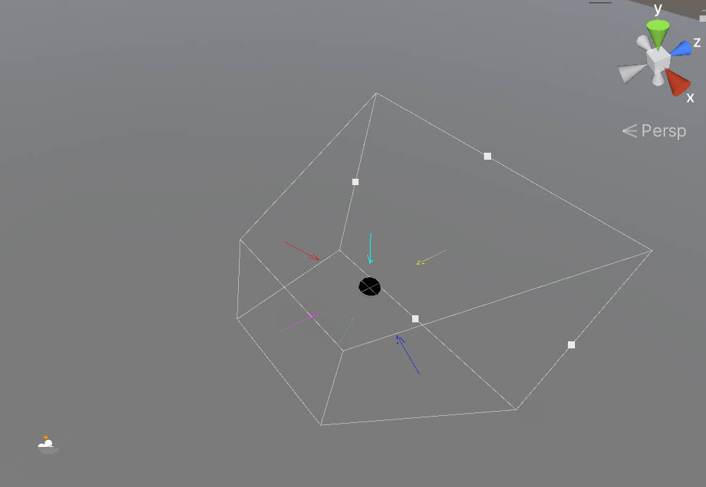
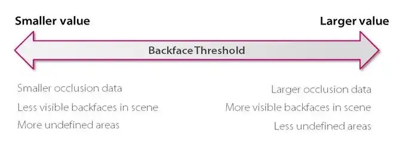
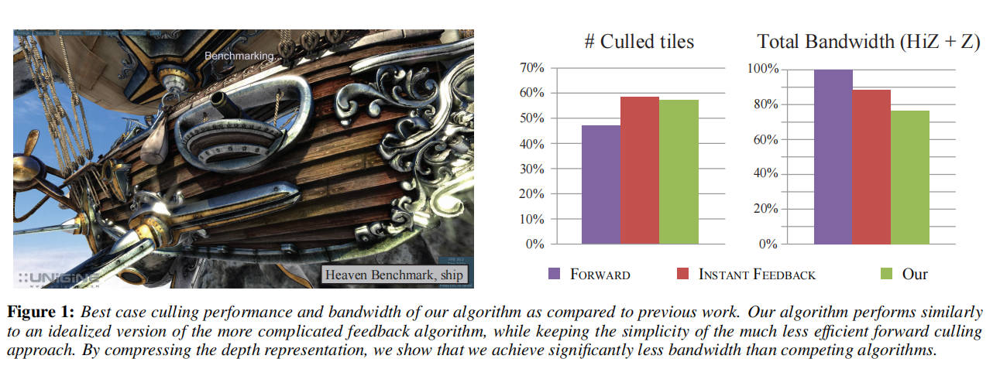

Culling
Table of Contents
OcclusionCulling note.
<!– more –>
FrustumCulling
Basics
Frustum
Frustum 可以用 6 个平面表示。每个平面的 normal 都指向 Frustum 内部。

SphereBoundingVolume
判断 SphereCenter 到 6 个平面的距离，当距离都大于 -SphereRadius，说明 Sphere 和 Frustum 相交或在 Frustum 内。
AABB
方法 1：
判断 AABB 8 个顶点是否都在 6 个平面中任意一个平面外侧。如果，8 个顶点都在某个平面外侧，则 AABB 在 Frustum 外。
方法 2：
上面的两种方法并不是完美的，物体不可见时，可能没有被剔除掉，如下图所示：
SourceCode
struct Plane { glm::vec3 normal = { 0.f, 1.f, 0.f }; // unit vector float distance = 0.f; // Distance with origin Plane() = default; Plane(const glm::vec3& p1, const glm::vec3& norm) : normal(glm::normalize(norm)), distance(glm::dot(normal, p1)) {} float getSignedDistanceToPlane(const glm::vec3& point) const { return glm::dot(normal, point) - distance; } }; struct Frustum { Plane topFace; Plane bottomFace; Plane rightFace; Plane leftFace; Plane farFace; Plane nearFace; }; struct BoundingVolume { virtual bool isOnFrustum(const Frustum& camFrustum, const Transform& transform) const = 0; virtual bool isOnOrForwardPlane(const Plane& plane) const = 0; bool isOnFrustum(const Frustum& camFrustum) const { return (isOnOrForwardPlane(camFrustum.leftFace) && isOnOrForwardPlane(camFrustum.rightFace) && isOnOrForwardPlane(camFrustum.topFace) && isOnOrForwardPlane(camFrustum.bottomFace) && isOnOrForwardPlane(camFrustum.nearFace) && isOnOrForwardPlane(camFrustum.farFace)); }; }; struct Sphere : public BoundingVolume { glm::vec3 center{ 0.f, 0.f, 0.f }; float radius{ 0.f }; Sphere(const glm::vec3& inCenter, float inRadius) : BoundingVolume{}, center{ inCenter }, radius{ inRadius } {} bool isOnOrForwardPlane(const Plane& plane) const final { return plane.getSignedDistanceToPlane(center) > -radius; } bool isOnFrustum(const Frustum& camFrustum, const Transform& transform) const final { //Get global scale thanks to our transform const glm::vec3 globalScale = transform.getGlobalScale(); //Get our global center with process it with the global model matrix of our transform const glm::vec3 globalCenter{ transform.getModelMatrix() * glm::vec4(center, 1.f) }; //To wrap correctly our shape, we need the maximum scale scalar. const float maxScale = std::max(std::max(globalScale.x, globalScale.y), globalScale.z); //Max scale is assuming for the diameter. So, we need the half to apply it to our radius Sphere globalSphere(globalCenter, radius * (maxScale * 0.5f)); //Check Firstly the result that have the most chance to failure to avoid to call all functions. return (globalSphere.isOnOrForwardPlane(camFrustum.leftFace) && globalSphere.isOnOrForwardPlane(camFrustum.rightFace) && globalSphere.isOnOrForwardPlane(camFrustum.farFace) && globalSphere.isOnOrForwardPlane(camFrustum.nearFace) && globalSphere.isOnOrForwardPlane(camFrustum.topFace) && globalSphere.isOnOrForwardPlane(camFrustum.bottomFace)); }; }; struct SquareAABB : public BoundingVolume { glm::vec3 center{ 0.f, 0.f, 0.f }; float extent{ 0.f }; SquareAABB(const glm::vec3& inCenter, float inExtent) : BoundingVolume{}, center{ inCenter }, extent{ inExtent } {} bool isOnOrForwardPlane(const Plane& plane) const final { // Compute the projection interval radius of b onto L(t) = b.c + t * p.n const float r = extent * (std::abs(plane.normal.x) + std::abs(plane.normal.y) + std::abs(plane.normal.z)); return -r <= plane.getSignedDistanceToPlane(center); } bool isOnFrustum(const Frustum& camFrustum, const Transform& transform) const final { //Get global scale thanks to our transform const glm::vec3 globalCenter{ transform.getModelMatrix() * glm::vec4(center, 1.f) }; // Scaled orientation const glm::vec3 right = transform.getRight() * extent; const glm::vec3 up = transform.getUp() * extent; const glm::vec3 forward = transform.getForward() * extent; const float newIi = std::abs(glm::dot(glm::vec3{ 1.f, 0.f, 0.f }, right)) + std::abs(glm::dot(glm::vec3{ 1.f, 0.f, 0.f }, up)) + std::abs(glm::dot(glm::vec3{ 1.f, 0.f, 0.f }, forward)); const float newIj = std::abs(glm::dot(glm::vec3{ 0.f, 1.f, 0.f }, right)) + std::abs(glm::dot(glm::vec3{ 0.f, 1.f, 0.f }, up)) + std::abs(glm::dot(glm::vec3{ 0.f, 1.f, 0.f }, forward)); const float newIk = std::abs(glm::dot(glm::vec3{ 0.f, 0.f, 1.f }, right)) + std::abs(glm::dot(glm::vec3{ 0.f, 0.f, 1.f }, up)) + std::abs(glm::dot(glm::vec3{ 0.f, 0.f, 1.f }, forward)); const SquareAABB globalAABB(globalCenter, std::max(std::max(newIi, newIj), newIk)); return (globalAABB.isOnOrForwardPlane(camFrustum.leftFace) && globalAABB.isOnOrForwardPlane(camFrustum.rightFace) && globalAABB.isOnOrForwardPlane(camFrustum.topFace) && globalAABB.isOnOrForwardPlane(camFrustum.bottomFace) && globalAABB.isOnOrForwardPlane(camFrustum.nearFace) && globalAABB.isOnOrForwardPlane(camFrustum.farFace)); }; }; struct AABB : public BoundingVolume { glm::vec3 center{ 0.f, 0.f, 0.f }; glm::vec3 extents{ 0.f, 0.f, 0.f }; AABB(const glm::vec3& min, const glm::vec3& max) : BoundingVolume{}, center{ (max + min) * 0.5f }, extents{ max.x - center.x, max.y - center.y, max.z - center.z } {} AABB(const glm::vec3& inCenter, float iI, float iJ, float iK) : BoundingVolume{}, center{ inCenter }, extents{ iI, iJ, iK } {} std::array<glm::vec3, 8> getVertice() const { std::array<glm::vec3, 8> vertice; vertice[0] = { center.x - extents.x, center.y - extents.y, center.z - extents.z }; vertice[1] = { center.x + extents.x, center.y - extents.y, center.z - extents.z }; vertice[2] = { center.x - extents.x, center.y + extents.y, center.z - extents.z }; vertice[3] = { center.x + extents.x, center.y + extents.y, center.z - extents.z }; vertice[4] = { center.x - extents.x, center.y - extents.y, center.z + extents.z }; vertice[5] = { center.x + extents.x, center.y - extents.y, center.z + extents.z }; vertice[6] = { center.x - extents.x, center.y + extents.y, center.z + extents.z }; vertice[7] = { center.x + extents.x, center.y + extents.y, center.z + extents.z }; return vertice; } //see https://gdbooks.gitbooks.io/3dcollisions/content/Chapter2/static_aabb_plane.html bool isOnOrForwardPlane(const Plane& plane) const final { // Compute the projection interval radius of b onto L(t) = b.c + t * p.n const float r = extents.x * std::abs(plane.normal.x) + extents.y * std::abs(plane.normal.y) + extents.z * std::abs(plane.normal.z); return -r <= plane.getSignedDistanceToPlane(center); } bool isOnFrustum(const Frustum& camFrustum, const Transform& transform) const final { //Get global scale thanks to our transform const glm::vec3 globalCenter{ transform.getModelMatrix() * glm::vec4(center, 1.f) }; // Scaled orientation const glm::vec3 right = transform.getRight() * extents.x; const glm::vec3 up = transform.getUp() * extents.y; const glm::vec3 forward = transform.getForward() * extents.z; const float newIi = std::abs(glm::dot(glm::vec3{ 1.f, 0.f, 0.f }, right)) + std::abs(glm::dot(glm::vec3{ 1.f, 0.f, 0.f }, up)) + std::abs(glm::dot(glm::vec3{ 1.f, 0.f, 0.f }, forward)); const float newIj = std::abs(glm::dot(glm::vec3{ 0.f, 1.f, 0.f }, right)) + std::abs(glm::dot(glm::vec3{ 0.f, 1.f, 0.f }, up)) + std::abs(glm::dot(glm::vec3{ 0.f, 1.f, 0.f }, forward)); const float newIk = std::abs(glm::dot(glm::vec3{ 0.f, 0.f, 1.f }, right)) + std::abs(glm::dot(glm::vec3{ 0.f, 0.f, 1.f }, up)) + std::abs(glm::dot(glm::vec3{ 0.f, 0.f, 1.f }, forward)); const AABB globalAABB(globalCenter, newIi, newIj, newIk); return (globalAABB.isOnOrForwardPlane(camFrustum.leftFace) && globalAABB.isOnOrForwardPlane(camFrustum.rightFace) && globalAABB.isOnOrForwardPlane(camFrustum.topFace) && globalAABB.isOnOrForwardPlane(camFrustum.bottomFace) && globalAABB.isOnOrForwardPlane(camFrustum.nearFace) && globalAABB.isOnOrForwardPlane(camFrustum.farFace)); }; }; Frustum createFrustumFromCamera(const Camera& cam, float aspect, float fovY, float zNear, float zFar) { Frustum frustum; const float halfVSide = zFar * tanf(fovY * .5f); const float halfHSide = halfVSide * aspect; const glm::vec3 frontMultFar = zFar * cam.Front; frustum.nearFace = { cam.Position + zNear * cam.Front, cam.Front }; frustum.farFace = { cam.Position + frontMultFar, -cam.Front }; frustum.rightFace = { cam.Position, glm::cross(frontMultFar - cam.Right * halfHSide, cam.Up) }; frustum.leftFace = { cam.Position, glm::cross(cam.Up, frontMultFar + cam.Right * halfHSide) }; frustum.topFace = { cam.Position, glm::cross(cam.Right, frontMultFar - cam.Up * halfVSide) }; frustum.bottomFace = { cam.Position, glm::cross(frontMultFar + cam.Up * halfVSide, cam.Right) }; return frustum; } AABB generateAABB(const Model& model) { glm::vec3 minAABB = glm::vec3(std::numeric_limits<float>::max()); glm::vec3 maxAABB = glm::vec3(std::numeric_limits<float>::min()); for (auto&& mesh : model.meshes) { for (auto&& vertex : mesh.vertices) { minAABB.x = std::min(minAABB.x, vertex.Position.x); minAABB.y = std::min(minAABB.y, vertex.Position.y); minAABB.z = std::min(minAABB.z, vertex.Position.z); maxAABB.x = std::max(maxAABB.x, vertex.Position.x); maxAABB.y = std::max(maxAABB.y, vertex.Position.y); maxAABB.z = std::max(maxAABB.z, vertex.Position.z); } } return AABB(minAABB, maxAABB); } Sphere generateSphereBV(const Model& model) { glm::vec3 minAABB = glm::vec3(std::numeric_limits<float>::max()); glm::vec3 maxAABB = glm::vec3(std::numeric_limits<float>::min()); for (auto&& mesh : model.meshes) { for (auto&& vertex : mesh.vertices) { minAABB.x = std::min(minAABB.x, vertex.Position.x); minAABB.y = std::min(minAABB.y, vertex.Position.y); minAABB.z = std::min(minAABB.z, vertex.Position.z); maxAABB.x = std::max(maxAABB.x, vertex.Position.x); maxAABB.y = std::max(maxAABB.y, vertex.Position.y); maxAABB.z = std::max(maxAABB.z, vertex.Position.z); } } return Sphere((maxAABB + minAABB) * 0.5f, glm::length(minAABB - maxAABB)); }
Unity Occlusion culling
Basics
遮挡烘培有下面三个设置选项：
- Smallest Occluder
可以把其看做烘培过程输出的分辨率。
最小遮挡物大小。默认值为 5，单位为米(meters)。以人类尺度，模拟真实世界，该值设置为 2-5 是比较合理的。
- Smallest Hole
可以把其看做烘培过程输入的分辨率。
最小的孔。默认值为 0.25，单位为米。
- Backface Threshold
该参数用于优化运行时内存占用。
按照背面剔除物体的阙值。该值是一个百分比，默认值为 100，表示不按照背面剔除物体。
当该值设置为 90 时，表示当你在某个格子中，如果你看到的 90%的面都是背面，则 Umbra 会忽略该格子。

Occlusion Areas
Occlusion Areas 定义了 View Volumes，其为在运行时 Camera 可能被放置的区域。烘焙时，Unity 会在 View Volumes 内生成高精度的数据。运行时，当 Camera 的位置在 ViewVolume 内，Unity 会执行高精度的计算。
如果在场景中，你没有定义任何 ViewVolume，Unity 会在烘培时，创建一个 ViewVolume，其包含场景内所有被标记为 Occluder Static 或 Occludee Static 的物体。这可能会导致不必要的比较大的烘焙数据。
Occlusion Portals
Occlusion Portal(遮挡门)可以被打开也可以被关闭。当 Occlusion Portal 关闭时，其可以遮挡其他 GameObjects；当 Occlusion Portal 打开时，其不能遮挡其他 GameObjects。
Using occlusion culling with dynamic GameObjects
GameObjects 可以是 static 的或 dynamic 的。静态游戏对象和动态游戏对象在 Unity 的遮挡剔除系统中表现不同：
- Unity 可以将静态游戏对象烘焙到遮挡剔除数据中，作为静态遮挡物和/或静态被遮挡物。
- Unity 不能将动态游戏对象烘焙到遮挡剔除数据中。动态游戏对象可以在运行时作为被遮挡物，但不能作为遮挡物。
要确定动态游戏对象是否作为被遮挡物，你可以在任何类型的 Renderer 组件上设置 Dynamic Occlusion 属性。当启用 Dynamic Occlusion 时，当一个 Static Occluder 阻挡了它的视野时，Unity 会剔除该 renderer。当禁用 Dynamic Occlusion 时，当一个 Static Occluder 阻挡了它的视野时，Unity 不会剔除该 renderer。
Dynamic Occlusion 默认是启用的。你可能想要禁用 Dynamic Occlusion 以实现特定效果，例如在墙后面的角色周围绘制轮廓。
如果你确定 Unity 永远不应该对特定游戏对象应用遮挡剔除，你可以禁用 Dynamic Occlusion，以节省运行时计算并减少 CPU 使用量。每个游戏对象的这些计算对性能的影响非常小，但在足够大的规模下，这可能有助于提升性能。
Tips:
Unity Occlusion culling 对于 GPU Instancing 物体也是生效的。
Occlusion culling and Scene loading
假设运行时，需要同时加载 3 个场景。那么，在制作时，需要利用多场景编辑对这 3 个场景一起烘培 OcclusionCullingData。如下图是 3 个场景一起烘培产生的数据：

加载场景时，首先，使用 LoadSceneMode.Single 模式加载 3 个场景中的其中一个场景 A，此时，Unity 会将当前激活的场景及其 occlusion 数据卸载，然后，unity 才会加载场景 A 以及 3 个场景共用的 occlusion data。之后，使用 LoadSceneMode.Additive 模式加载其他场景时，若 unity 发现加载场景的 occlusion data 和当前激活场景的 occlusion data 一样，occlusion culling 就可以在多场景模式下正常工作了。
Error
Visibility Lines 不可见
- Occlusion 窗口下没切换到 Visualization 页签。
- SceneView 下 OcclusionCulling/Visibility Lines 没有勾选。
- SceneView 下 OcclusionCulling/Occlusion culling 没有勾选。
- 摄像机不在 CameraVolumes 内部。
- Gizmos 没有打开
参考资料
- https://thegamedev.guru/unity-performance/occlusion-culling-tutorial/
- https://blog.unity.com/technology/occlusion-culling-in-unity-4-3-the-basics
- https://blog.unity.com/technology/occlusion-culling-in-unity-4-3-best-practices
- https://blog.unity.com/technology/occlusion-culling-in-unity-4-3-troubleshooting
- https://docs.unity3d.com/2020.3/Documentation/Manual/OcclusionCulling.html
Unity GPU occlusion culling
Basics
GPU 遮挡剔除意味着 Unity 使用 GPU 而不是 CPU 来排除在其他对象后面被遮挡的对象，从而加速渲染。这种方法在有大量遮挡的场景中可以显著提高渲染速度。
GPU Resident Drawer 仅在以下情况下工作：
- 使用 Forward+ rendering path。
- 支持 compute shaders 的 Graphics API 和平台。
How GPU occlusion culling works
GPU 遮挡剔除的工作原理
Unity 从场景中的相机和光源的视角生成深度纹理。
然后，GPU 使用当前帧和前一帧的深度纹理来剔除对象。Unity 仅渲染在任一帧中未被遮挡的对象。对于那些在两帧中都被遮挡的对象，Unity 会进行剔除。
GPU 遮挡剔除是否能加快渲染速度取决于你的场景。GPU 遮挡剔除在以下设置中最为有效：
- 多个对象使用相同的网格，此时 Unity 可以将它们分组到单个绘制调用中。
- 场景中有大量的遮挡，尤其是被遮挡的对象具有大量顶点时。
如果遮挡剔除对你的场景影响不大，由于 GPU 需要额外工作来设置 GPU 遮挡剔除，渲染时间可能会增加。
Enable GPU occlusion culling
- 进入 Graphics，选择 URP 标签，然后在 Render Graph 部分确保 Compatibility Mode（Render Graph Disabled）被禁用。
- 启用 GPU Resident Drawer。
- Project Settings > Graphics, 在 Shader Stripping 部分，将 BatchRendererGroup Variants 设置为 Keep All
- 选中激活的 URP Asset，开启 SRP Batcher (Inspector Debug 模式下可以设置 SRP Batcher)
- 选中 URP Asset 对应的 Render List 中的每个 Universal Renderer，将 Rendering Path 设置为 Forward+
- 选中激活的 URP Asset，设置 GPU Resident Drawer 为 Instanced Drawing
- Project Settings > Graphics, 在 Shader Stripping 部分，将 BatchRendererGroup Variants 设置为 Keep All
- 选中激活的 URP Asset，启用 GPU Occlusion。
SourceCode
Simple GPU Occlusion culling
Basics
- 对于每一个选定的 game object，创建一个带有特殊透明材质的 bounding box。
- 使用 bounding box 来代替原始 mesh，以加速渲染
- 要可视化 bounding box，请在 SimpeGPUOcclusionCulling 组件上选择开启 “Debug”。
- 使用 bounding box 来代替原始 mesh，以加速渲染
- Pixel shader 使用属性[earlydepthstencil]，在着色器执行之前强制进行深度-模板测试。这样可以获取当前像素是否最终可见于屏幕上的信息（即是否在相机视锥内且未被其他对象遮挡）。
- 如果可见，RWStructuredBuffer 会获取当前屏幕空间的顶点坐标并写入第一个 UAV 寄存器。
- 否则，如果不可见，RWStructuredBuffer 将不会写入新值（最终获取到的为 zero vector）。
- 如果可见，RWStructuredBuffer 会获取当前屏幕空间的顶点坐标并写入第一个 UAV 寄存器。
- 在 C#端，通过 ComputeBuffer.GetData 将缓冲区值复制到数组中，然后根据数组中当前向量值的不同，启用或禁用选定的网格渲染器。
这种解决方案在由大量不同网格/材质组成的 Prefabs 中效果最佳（当单个边界框包含多个网格渲染器时）。
要添加新的对象以进行剔除，将其添加到 SimpeGPUOcclusionCulling.Targets 列表中。
默认情况下，当对象在第一个相机中不可见但在第二个相机中可见时，剔除不会工作。对象必须在所有相机中都不可见，但你可以扩展此资源中的代码，使用 OnPreRender()和 OnPostRender()来实现对单个相机的效果。
后续优化：
- 场景静态物体对应的 BoundingBox 是固定不变的，可以持久化到 GPU 端
- 原地运动的物体对应的 BoundingBox 变化不大，可以设置一个自定义的 BoundingBox，这类动态物体也可和静态物体一起持久化到 GPU 端
- 动态的物体对应的 BoundingBox 会不断变化，需要每一帧都要更新，然后再上传到 GPU 端
- 频繁加载卸载的静态物体，虽然 BoundingBox 不会变化
TODO：
- 将当前不显示的静态物体也持久化到 GPU 端，有以下缺点，这些缺点对性能影响如何？
a. 绘制的 BoundingBox 增加
b. 需要读回的数据量增加
SourceCode
_Vertices and _Reader
_Vertices 记录了所有 Mesh 合在一起的所有顶点坐标(Vector4.xyz)，以及每个顶点坐标对应的 Mesh 编号(Vector4.w)
_Reader 为 _Vertices 对应的 GPU 端数据。
private List<Vector4> _Vertices; _Reader = new ComputeBuffer(_Vertices.Count, 16, ComputeBufferType.Default); _Reader.SetData(_Vertices.ToArray());
_Elements and _Writer
_Elements 为 _Writer 对应的 CPU 端数据。
_Writer 记录 Mesh 对应的 bounding box 某个顶点经过 VP 变换后的齐次坐标。不可见物体对应的值为 Vector4.zero
// csharp private Vector4[] _Elements; // shader float4 VSMain (float4 vertex : POSITION, out uint instance : TEXCOORD0, uint id : SV_VertexID) : SV_POSITION { // 从 buffer 中获取顶点数据 instance = _Reader[id].w; return mul (UNITY_MATRIX_VP, float4(_Reader[id].xyz, 1.0)); } [earlydepthstencil] float4 PSMain (float4 vertex : SV_POSITION, uint instance : TEXCOORD0) : SV_TARGET { _Writer[instance] = vertex; return float4(0.0, 0.0, 1.0, 0.2 * _Debug); }
Graphics Hardware Occlusion Culling
2015-Masked Depth Culling for Graphics Hardware
分层深度剔除是一种重要的优化技术，它存在于所有现代高性能图形处理器中。我们提出了一种基于分层深度表示的新颖剔除算法，每个样本都有一个指示其所属层的掩码。与依赖延迟反馈循环的先前工作相比，我们的算法是前馈式的。它实现起来简单，限制较少，使得硬件架构的负载均衡更容易。与以前的工作相比，我们的算法表现非常出色，通常可以达到超过 90%的最佳剔除效率。此外，通过压缩分层深度缓冲区，我们可以减少多达 16%的带宽。
Introduce
2014 年，笔记本和台式机市场售出了超过 4 亿个图形处理器。在这些 GPU 中，都有一个高度优化的固定功能分层深度剔除单元，它使用基于瓦片的遮挡剔除技术 [Greene et al. 1993; Morein 2000]。为了最小化深度缓冲区的内存传输，进而提高性能和降低功耗，已经进行了大量的工程努力来微调这些单元。遮挡剔除在 GPU 中是透明集成的，即大多数用户在享受其好处时甚至不知道它的存在。每年出货的大量单元以及分层深度剔除带来的性能/功率优势使其不仅要提高效率，还要使实现更简单、更稳健以应对不同的使用案例。
我们提出了一种使用分层深度表示的新颖剔除算法，并使用选择掩码将每个样本与一个层关联。在我们的算法中，剔除和更新这种分层深度非常简单且成本低廉，与先前的方法不同，我们无需使用昂贵的反馈循环即可计算准确的深度边界 [Hasselgren and Akenine-Möller 2006]。此外，由于我们不需要扫描后端所有样本的深度值，因此在选择瓦片大小时具有更大的自由度。这反过来使得图形管线的负载均衡更加容易。参见图 1 了解我们算法的剔除潜力示例。

Previous Work
Greene 等人[1993]提出了一个基于完整深度金字塔的剔除系统，其中每一层都采用了保守的 zmax 值。然而，尽管该系统具有很大的影响，但始终保持整个深度金字塔的更新并不实际。Morein[2000]采用了一种更实用的方法，其中最大深度 zmax 是按块存储和计算的。如果块内三角形的保守估计最小深度大于该块的 zmax，则可以剔除与该块重叠的三角形部分。此外，还可以存储块最小深度 zmin，以避免深度读取。如果三角形的保守估计最大深度小于 zmin[Akenine-M¨oller 和 Str¨om 2003]，则三角形可以轻易地覆盖该块（假设没有 alpha/模板测试等），从而可以跳过读取操作。从文献[Hasselgren 和 Akenine-M¨oller 2006; Morein 2000]中，我们推断出 zmax 通常是根据块中每个样本的深度来计算的，并且必须通过反馈循环传递给分层深度测试。理想情况下，每次覆盖具有最大深度值的样本时，都应重新计算和更新块的 zmax 值，但为了减少计算量，更新通常不那么频繁。例如，当块从深度缓存中逐出时，可以重新计算 zmax。
遮挡查询计算通过深度测试的片段数量，并可以使用简单的代理几何图形（如包围盒）来剔除整个对象[Bittner 等人 2004；Guthe 等人 2006；Mattausch 等人 2008；Staneker 等人 2003]。Aila 和 Miettinen[2004]提出了一种动态遮挡剔除系统，在游戏行业中，已经证明基于软件光栅化的遮挡查询对于更好地平衡 CPU 和 GPU 负载是有用的[Collin 2011]。Zhang 等人[1997]提出了使用分层遮挡图进行遮挡查询。他们不是基于深度缓冲区进行查询，而是使用全分辨率的分层覆盖图，并在低分辨率深度估计缓冲区中单独存储深度。
受 Jouppi 和 Chang[1999]的启发，我们的算法使用了遮挡物合并。他们提出了一种通过存储低精度深度平面方程来实现低成本抗锯齿和透明度处理的算法。每个像素存储固定数量的平面，并使用合并启发式处理溢出。类似地，Beaudoin 和 Poulin[2004]扩展了 MSAA[Akeley 1993]，以使用分层索引结构来引用每个块的一小组颜色和深度值。为了处理层溢出，他们选择降低采样率，而不是使用有损的合并启发式。
Greene 和 Kass 扩展了他们早期的工作[Greene 等人 1993]，包括使用间隔算术为着色器提供带有误差范围的抗锯齿，以及使用四叉树细分为可见性处理[1994]。此外，Greene 等人[1996]使用 BSP 树来分层遍历场景和屏幕空间，使用覆盖掩码的金字塔进行高效的抗锯齿。为了节省小三角形的像素着色工作，Fatahalian 等人[2010]利用聚合覆盖掩码，从相邻的三角形中收集和合并四边形片段。他们的掩码用途与我们的不同，因为他们用它来避免在几何不连续处合并着色，而我们的掩码表示是深度缓冲区的有损但保守的近似。
Overview of Current Architectures
为了将我们的算法置于上下文中，我们首先描述之前工作[Hasselgren 和 Akenine-M¨oller 2006]所展示的 GPU depth pipeline 的典型实现。图 2 的顶行从功能角度展示了管线，这是大多数现代图形 API 中规定的。随着一系列三角形通过渲染管道，深度和颜色缓冲区会逐步更新。对于每个样本，会存储最近三角形的深度及其颜色。出于性能原因，实际的硬件管道通常与 API 规范有所不同，图 2 中间行展示了一种常见的实现方式。接下来，为了简化描述，我们将讨论范围限制在“Less Than”深度函数上，但这些技术可推广至所有流行 API（如 DirectX、OpenGL，以及预计即将推出的 Vulkan API）中使用的深度函数类型。
光栅化器
我们跳过图形处理器的几何处理部分，从光栅化器单元开始讨论。光栅化器负责确定哪些样本与特定三角形重叠。作为一种优化，现代光栅化器通常对瓦片进行操作，瓦片是由 w × h × d 个样本组成的组，其中 d 是每个像素的样本数。对每个瓦片执行保守测试，以确定其是否被完全覆盖、完全位于三角形外部或与三角形部分重叠。仅对与三角形部分重叠的瓦片执行每个样本的覆盖测试。一旦计算出样本覆盖情况，就会使用片段着色器对每个片段进行着色，随后进行深度测试以确定可见性。如图 2 中间行所示，常见的优化是在分层 z 或 HiZ 单元之后进行每个样本的覆盖测试。其基本原理是，HiZ 可以在每个样本的覆盖测试发生之前删除或剔除瓦片，从而提高该单元的性能。
HiZ 单元
深度测试可能会消耗大量的内存带宽和计算能力[Aila 等人，2003]。因此，硬件管道通常配备一个 HiZ 单元，其目的是每当可以明确确定整个样本组的深度测试结果时，使用粗略的深度测试快速丢弃（剔除）或接受瓦片。为此，HiZ 单元维护了一个保守的深度缓冲区版本，称为粗略深度缓冲区，其中包含每个瓦片的深度范围，[z_tile_min，z_tile_max]。
粗略深度测试
当瓦片到达 HiZ 单元时，第一步是计算传入瓦片内三角形的深度保守范围[z_tri_min，z_tri_max][Akenine-M¨oller 等人，2008]。然后，使用区间重叠测试(interval overlap tests)将这些范围与粗略深度缓冲区进行测试。例如，对于小于深度函数，如果 z_tri_min ≥ z_tile_max，我们可以断定所有样本的逐个样本深度测试都将失败；如果 z_tri_max < z_tile_min，则测试通过。还剩一种情况，[z_tri_min，z_tri_max]和[z_tile_min，z_tile_max]两个范围有重叠，此时无法确定逐个样本深度测试的结果。因此，粗略深度测试为三种结果之一：失败、通过或模糊。失败（即剔除）的瓦片会立即被丢弃，无需进一步处理。通过和模糊的瓦片会被发送到管道中进行进一步处理，主要区别在于模糊的瓦片必须在深度单元中进行完整的深度测试，而通过的瓦片可以简单地覆盖深度缓冲区的内容。这是一个细微的差别，但根据架构的不同，只写操作可能比执行完整深度测试所需的读写操作具有更低的带宽[Akenine-M¨oller 和 Str¨om，2003]。
粗略深度缓冲区更新
随着渲染的进行，粗略深度缓冲区会不断更新。根据以前的工作[Morein 2000；Akenine-M¨oller 和 Str¨om 2003]，我们注意到 z_tile_min 和 z_tile_max 在管道中使用两种不同的机制分别更新，即位于粗略深度测试之后的正向更新和位于深度单元与 HiZ 单元之间的反馈更新。这在图 2 的中间行中有所说明。
在正向更新阶段，z_tile_min 可以有效地计算为 z_tile_min = min(z_tri_min，z_tile_min)。但是，只有当瓦片中的所有样本都被覆盖时，才能更新 z_tile_max 值。如果覆盖掩码已完全设置，则 z_tile_max = min(z_tri_max，z_tile_max)。不幸的是，当使用较小的三角形时，由于它们不太可能完全覆盖瓦片，因此此更新的效果很差。仅使用正向阶段时产生的不规则覆盖的例子可以在图 9 中看到。
使用反馈更新可以获得更好的 z_tile_max 值。在这里，深度单元对整个瓦片的深度样本进行最大值归约，并通过反馈机制将结果 zmax_feedback 发送到 HiZ 单元，如图 2 所示。为了减少执行最大值归约的次数，反馈更新通常在瓦片从深度缓存中逐出时进行。反馈机制引入了较大的延迟，因为 HiZ 和深度单元在硬件管线中可能相隔数百个周期。根据渲染状态，我们可能还需要等待片段着色器执行完毕并且瓦片从缓存中逐出后才能进行更新。因此，z_tile_max 更新可能会滞后，导致剔除率降低。此外，这种延迟还会产生一些不明显的副作用，例如如何保守地处理反馈消息源自与当前活动状态不同的 GPU 状态的情况。
深度单元
深度单元中最直接的优化是早期深度测试（Early Z），它利用了在许多情况下可以在片段着色之前进行深度测试的优势。这通常显著提高性能，因为片段着色代价高昂且常常是瓶颈。大多数情况下，使用早期深度测试是安全的，但在某些情况下必须禁用，例如片段着色器通过丢弃操作改变覆盖范围，输出深度值，或写入无序访问视图（UAV）资源时。
与 HiZ 单元类似，深度单元通常对瓦片上的样本进行操作，但不是执行单个测试，而是将每个样本与深度缓冲区中存储的值进行单独测试。深度单元中的瓦片大小通常与缓存行的大小相关，而缓存行的大小又由可以高效地从内存中传输的数据量决定。应该注意的是，反馈机制在 HiZ 和深度单元的瓦片大小之间创建了约束。最大值归约操作需要在 HiZ 缓冲区的瓦片粒度上执行。因此，重要的是所有所需的数据都应位于深度单元缓存中，而确保这一点的最简单方法是将粗略深度缓冲区和常规深度缓冲区的瓦片大小耦合起来。
Algorithm
在不依赖反馈机制的情况下，准确更新瓦片的最大深度是具有挑战性的。我们算法的关键创新在于，仅使用前向更新来高效且准确地更新粗略深度缓冲区，这完全消除了对反馈机制的需求，如图 2 底行所示。更新以流式方式逐步进行，并且仅使用当前三角形的信息。无需缓冲三角形或渲染历史。
在不失一般性的情况下，我们将算法的描述限制为每个瓦片仅有两个深度层。每个瓦片具有一个 zmin 值和两个 zimax (i=0 或 1，即 z0max 和 z1max)值。此外，我们为每个样本存储一个一 bit 的选择掩码，该掩码将每个样本与这两个层之一相关联。我们保持第 3 节中描述的 zmin 更新策略，因为它简单且高效。每个 zimax 必须大于或等于与该层相关联的所有样本。我们通过将传入的三角形和分层表示进行保守合并来实现这一点。接下来，我们将详细描述粗略深度测试和更新。
粗略深度测试
如第 3 节所述，光栅化器提供三角形及其覆盖掩码，这使我们能够像以前一样计算 ztrimin 和 ztrimax。类似于 zmin/zmax 剔除的粗略深度测试，我们对每个层执行[ztrimin, ztrimax]和[zmin, zimax]之间的间隔重叠测试，如图 3 所示。可以使用简单的位操作从三角形的覆盖掩码和选择掩码构建每样本的通过和失败掩码汇总。仅对不在通过或失败掩码中的样本进行精确深度测试。附录中的清单 1 给出了如何执行粗略深度测试的伪代码。
图 3：在我们的粗略深度测试中如何计算失败掩码的逐步说明。A：橙色的三角形被光栅化并转发到 HiZ 单元。B：粗略深度缓冲区已经包含一个具有两层的瓦片，即前景中的屋顶（棕色）和天空背景（蓝色）。如虚线所示，三角形被屋顶遮挡，而在天空前面可见。C：将三角形与屋顶层的深度进行重叠测试，由于 ztrimin > z0max，因此结果是两个红色像素表示的失败掩码。D：将三角形与天空进行重叠测试，结果是不能剔除。因此，这一层的失败掩码实际上是空的，但为了清晰起见，我们指出这三个模棱两可(ambiguous)的像素。E：汇总失败掩码。由于失败掩码不包含三角形覆盖的所有像素，因此我们无法剔除该三角形。但是，可以跳过两个红色像素的深度测试。
// 粗糙深度测试生成两个每个样本的掩码——通过掩码和失败掩码。其余的样本必须使用常规的每个样本深度测试进行测试 // tile.zMax[0] 是背景层 tile.zMax[1] 是前景层 function coarseZTest(tile, tri) failMask0 = (tri.zMin >= tile.zMax[0]) ? (tri.rastMask & ~tile.mask) : 0 failMask1 = (tri.zMin >= tile.zMax[1]) ? (tri.rastMask & tile.mask) : 0 failMask = failMask0 | failMask1 passMask = (tri.zMax < tile.zMin) ? tri.rastMask : 0 return [passMask, failMask]
粗略深度缓冲区更新
除非所有样本都被粗略深度测试剔除，否则我们必须以保守地限制深度缓冲区内容的方式更新粗略深度缓冲区。zmin 值的更新与第 3 节中先前描述的相同。挑战在于更新 zimax 值和选择掩码。除了瓦片中已经存在的（最多）两个层，传入的三角形形成了第三个深度层。我们通过使用启发式方法合并两个层来处理层溢出，如图 4 所示并在下文详细描述。
首先，考虑一个属于层 i 并且与传入三角形重叠的单个样本 S。在小于深度测试的情况下，我们知道深度测试后 S 的深度将至多为 z_i_max 和 z_tri_max 中较小的值。基于这个观察，通过比较两个 z_i_max 值和 z_tri_max，我们可以确定每个样本属于哪个层（是之前的层 i 还是传入的三角形层）。由此，我们构建了三个不重叠的样本掩码，指示每个样本属于哪三个层之一，z0_max、z1_max 和 z_tri_max，如图 4 的步骤 B 所示。
在对样本进行分类后，如果有任何层没有样本关联（即某个层的样本掩码为空），粗略缓冲区的更新就很简单。由于结果层数≤2，数据将适合我们的表示，我们可以简单地将填充的层写入粗略深度缓冲区。如果所有三个层都有样本，我们使用一个简单的基于距离的启发式方法来选择应合并哪些层。基本假设是具有相似深度值的三角形可能属于同一表面。如图 4 的步骤 C 所示，我们首先计算所有层之间的距离如下：
dT0 = |ztrimax − z0max|,
dT1 = |ztrimax − z1max|,
d01 = |z0max − z1max|
然后使用最短距离来确定执行哪个合并操作，如图 4 中的步骤 D 所示。
- 如果 dT0 最小，则 z0max = max(ztrimax, z0max)。
- 如果 dT1 最小，则 z1max = max(ztrimax, z1max)。
- 否则 z0max = max(z0max, z1max), 且 z1max = ztrimax。
还需要合并两个最近层的样本掩码（使用简单的按位操作）以生成新的选择掩码。更新和合并函数的伪代码可以在附录中的列表 3 和列表 4 中找到。
//代码清单 3：更新粗糙深度缓冲区。 //更新粗糙缓冲区 //如果任何层被覆盖，粗糙缓冲区会被简单地更新，而当遇到复杂的多层情况时，会调用基于启发式的合并函数来解决。 function coarseZUpdate(tile, tri) triMask0 = (tri.zMax < tile.zMax[0]) ? (tri.rastMask & ~tile.mask) : 0 triMask1 = (tri.zMax < tile.zMax[1]) ? (tri.rastMask & tile.mask) : 0 triMask = triMask0 | triMask1 layer0Mask = ~tile.mask & ~triMask layer1Mask = tile.mask & ~triMask if triMask != 0: if layer0Mask == 0: // 层 0 为空并被替换 tile.zMax[0] = tri.zMax tile.mask = ~triMask else if layer1Mask == 0: // 层 1 为空并被替换 tile.zMax[1] = tri.zMax tile.mask = triMask else: // 所有层都包含样本，合并 merge(tile, tri, triMask) // 代码清单 4：合并启发式 // 合并深度层 // 合并函数将三层减少到两层，并更新选择掩码。 function mergeClosest(tile, tri, triMask) dist0 = abs(tri.zMax - tile.zMax[0]) dist1 = abs(tri.zMax - tile.zMax[1]) dist2 = abs(tile.zMax[0] - tile.zMax[1]) if dist0 < dist1 && dist1 < dist2: // 将三角形层与层 0 合并 tile.zMax[0] = max(tile.zMax[0], tri.zMax) tile.mask = tile.mask & ~triMask else if dist1 < dist2: // 将三角形层与层 1 合并 tile.zMax[1] = max(tile.zMax[1], tri.zMax) tile.mask = tile.mask | triMask else: // 合并层 0 和 1 tile.zMax[0] = max(tile.zMax[0], tile.zMax[1]) tile.zMax[1] = tri.zMax tile.mask = triMask
切换深度函数
我们的算法可以在渲染时轻松处理深度函数切换。对于大于深度函数，瓦片改而由两个 zimin 值和一个 zmax 值表示。我们为每个粗略深度缓冲区瓦片使用 1 个 bit，指示当前使用哪种表示。如果瓦片与当前深度函数不匹配，我们在更新粗略深度缓冲区之前转换它。转换通过保守地交换最小值和最大值来执行。例如，如果存储在粗略深度缓冲区中的瓦片具有两个 max 层，但深度函数更改为大于，则我们通过设置 zmax = max(z0max, z1max)和 z0min = z1min = zmin 并清除选择掩码来转换瓦片。转换相当粗略，可能会丢失大量剔除信息，但我们尚未发现任何工作负载存在此问题，因为大多数场景中的深度函数更改并不频繁。所有标准的 OpenGL/DirectX 深度函数都可以使用小于或大于表示来处理。
粗深度测试管线放置
如图 2 底行所示，我们的粗深度测试基于覆盖掩码，这意味着每个样本的覆盖测试必须移动到光栅化块中。如前所述，将每个样本的覆盖测试放置在 HiZ 单元之后是有益的，因为可以为剔除的瓦片跳过覆盖测试，从而降低该单元的负载。
我们可以通过使用另一种粗略深度测试来实现类似的效果，在这种测试中，我们在[ztrimin，ztrimax]和[zmin，max(z0max，z1max)]之间执行重叠测试，类似于经典的 HiZ 测试。如图 5 所示，我们可以将每个样本的覆盖测试放置在粗深度测试和更新之间，这样可以实现类似于以前工作的负载平衡。这个版本的粗深度测试不太准确，但我们算法的大部分好处都来自于精确的更新。此替代方法的伪代码可在附录的清单 2 中找到。与第 5 节中给出的结果相比，我们算法的剔除率下降了 0.2-2.1 个百分点，总带宽增加了 0.7-1.4 个百分点。也可以执行两个版本的粗测试，有效地过滤大多数每个样本的覆盖测试，同时保留准确版本的好处。
4.1 压缩
为了减少粗糙深度缓冲区的带宽消耗，我们在条目从粗糙深度缓冲区被逐出时使用一种简单的压缩方案，类似于常规深度缓冲区压缩的工作方式 [Hasselgren 和 Akenine-Möller 2006; Hasselgren 等人 2012]。
我们的压缩方案受到小波系数零树编码 [Shapiro 1993] 的启发。首先将每个瓦片分割成一组块，每个块包含 b 个样本。对于每个块，我们使用一个 bit，表示其样本是否包含两个层的索引混合，或者所有样本是否属于同一层。如果所有索引都相同，只需要一个额外的位就可以将整个块分配给该层。一个包含两个层索引的块需要一个具有 b 位的显式掩码。通过这种方案，对于包含 s 个样本的瓦片，压缩选择掩码的成本 c 为
\[ c = \frac{2s}{b} + (b - 1)m, \]
其中 m 是需要明确存储的块的数量。如果 c ≤ s，选择掩码可以无损压缩。有趣的是，我们可以通过执行有损压缩来限制 m，而不会在渲染图像中引入伪影。
如果我们更改选择掩码中的一个索引以使用两个 z_i_max 值中较远的一个，粗糙深度缓冲区的表示仍然是有效的（即，相对于深度缓冲区是保守的）。因此，可以通过强制某些块使用单一层而不是两者的混合，来强制执行 m 的最大值。
此外，我们降低了 zmin 和 z_i_max 的精度。根据可用的位预算、深度缓冲区目标格式以及预期的深度样本分布，有多种可能的选项进行精度减低。我们选择使用具有较少指数位和尾数位的简化精度浮点数。此外，我们只使用负指数并且没有符号位，将可表示的范围限制在 [0, 1]。
Result
当比较不同的剔除算法时，主要关注两个指标：内存带宽使用和吞吐量。带宽主要由深度单元在读取和更新深度缓冲区时消耗，较少一部分由 HiZ 单元消耗，以维护粗略深度缓冲区。深度单元必须执行的每个样本测试的数量取决于粗略深度测试剔除（失败）的瓦片数量。因此，更高的剔除率会带来更好的吞吐量。根据系统和预期的工作负载，这些指标必须相互平衡以获得最大性能。我们评估了以下五种不同的管道配置，这些配置涉及带宽和剔除率（即，通过粗略深度测试剔除的瓦片的百分比）：
• ORACLE - HiZ 单元复制精确的深度缓冲区并执行每个样本的深度测试。对于每个样本，结果明确，只有通过与失败两种。只有当瓦片同时包含通过和未通过深度测试的样本时，才将其分类为不明确。此管道仅用于获取可能的剔除率的上限。
• FORWARD - 仅启用用于 zmin/zmax 剔除的前向更新单元。具有无限延迟的反馈单元就相当于只有前向的管道，这使得此配置成为此设计可以实现的剔除率的下限。
• INSTANT FEEDBACK - 同时使用前向和反馈 HiZ 更新机制。zmax 更新在深度缓冲区更新时直接触发，并且没有反馈延迟，这为我们提供了一个上限（尽管不切实际），以表明前向/反馈设计的性能有多好。
• ZMASK - 我们提出的前馈算法。
• PACKED ZMASK - 我们为最小化带宽而定制的算法。此变体需要一个额外的后 HiZ 缓存压缩阶段。
我们的结果基于 C++硬件模拟器，该模拟器在功能层面对系统进行建模。我们使用 32kB 的深度缓存和 16kB 的 HiZ 缓存，两者的缓存行大小为 64B（除非另有说明），并采用最近最少使用（LRU）替换策略。关于我们的主要结果（见图 6），我们分配了一个粗略的深度缓冲区，这相当于 FORWARD、INSTANT FEEDBACK 和 ZMASK 配置每个深度样本 4 位的开销。使用此存储，我们可以以 16 个样本的粒度保存信息。对于 ZMASK，我们以 32 个样本的粒度存储信息。所有配置都使用常见的快速清除优化，以确保结果不会因不同算法处理清除值的方式而产生偏差。
PACKED ZMASK 与 ZMASK 算法相似，但使用更大的瓦片，并在从 HiZ 缓存中逐出时进行压缩。在缓存中，每个瓦片占用更少的内存。由于我们不想更改内存事务大小，因此我们将多个瓦片分组到一个共同的缓存行中，该行在逐出时被压缩。为了实现这种压缩级别，我们使用了缩减精度的浮点格式。
因此，当使用 PACKED ZMASK 管道时，每个瓦片在缓存中占用更少的内存，并且从内存中读取或写入瓦片时使用的带宽也更少。瓦片大小是通过找到深度缓冲区带宽和 HiZ 带宽之间的最佳平衡来选择的。
我们的主要结果显示了每种管道的粗略剔除率和所消耗的带宽。剔除率已经针对 ZMASK 和 PACKED ZMASK 算法进行了归一化处理，以简化比较。由于粗略深度测试通过率在各算法之间非常相似，因此我们仅关注剔除瓦片的数量，以此作为吞吐量的衡量标准。测试套件包含来自现代游戏的多个跟踪，具有各种不同的渲染状态组合。从结果中可以看出，我们的算法在剔除效率方面通常接近 ORACLE。FORWARD 管道总是比所有其他选择效率低得多。平均而言，我们保留了 ORACLE 管道拒绝率的 90%，更困难的情况通常是具有大量 Alpha Test 几何图形的场景，或者在片段着色器中输出深度的场景。请注意，与 FORWARD 相比，ZMASK 使用的总带宽减少了约 14%，而 INSTANT FEEDBACK 使用的带宽比 FORWARD 少约 18%。然而，应该注意的是，INSTANT FEEDBACK 是理想化的，不切实际。增加管道延迟会暴露反馈算法的弱点。通过增加瓦片大小并使用 PACKED ZMASK 配置启用压缩，我们降低了剔除瓦片的数量，从而增加了深度缓冲区带宽。但是，由于 HiZ 带宽减少，总带宽消耗平均比 FORWARD 少约 30%，这是一个实质性的减少。
为 ORACLE 算法提供的剔除数量包括片段着色器修改覆盖范围的瓦片。例如，Alpha Test 的广告牌可能包含大面积完全透明的部分，这些部分在片段着色器中被丢弃。
Feedback Delay
反馈延迟：如前所述，反馈算法的性能取决于管道中的预期延迟时间。我们选择在深度缓冲区更新时实现反馈机制，而不是在缓存逐出时，并通过在反馈消息传递时引入 FIFO 队列来模拟延迟。这使我们能够通过处理的图块数量来任意延迟消息，并研究延迟增加如何影响系统性能。
图 7 显示了与 ZMASK 方法相比，增加的延迟如何影响剔除瓦片的数量和模拟的深度缓冲区总带宽（包括粗略和精确深度缓冲区）。不出所料，随着延迟的增加，剔除的瓦片数量减少。同样，对于更大的延迟，总带宽使用量显著增加。当延迟变得足够大时，可能在收到反馈消息之前，粗略深度缓冲区条目已经从 HiZ 缓存中逐出。因此，必须将数据读回缓存以执行反馈更新，并且 HiZ 和反馈机制将竞争哪些数据应驻留在缓存中。因此，根据系统的预期延迟来平衡 HiZ 缓存和深度单元缓存的大小非常重要。或者，可以丢弃未驻留在 HiZ 缓存中的瓦片的反馈更新，这避免了抖动，但代价是进一步降低剔除率。
应该注意的是，实际系统中管道、着色和缓存延迟会导致剔除效率和带宽以更复杂的方式缩放，图 7 应仅被视为趋势的指示。在我们的系统中，我们观察到使用基于逐出的反馈策略时带宽受到显著影响。如果我们将 HiZ 缓存大小减半至 8kB，同时保持深度缓存不变，则根据场景的不同，HiZ 带宽会增加约 10%至 45%。
Tile size
瓦片大小：由于我们的算法具有前馈性质，它允许我们轻松地将粗略和精确深度缓冲区的瓦片大小解耦，这提供了灵活性，可以选择在剔除效率和粗略深度缓冲区带宽之间提供最佳权衡的瓦片大小。在图 8 中，我们展示了算法在不同瓦片大小下的扩展情况。作为参考，我们还包括了 INSTANT FEEDBACK 管道的基线结果。
Multiple depth layers
多层深度： 我们的算法可以扩展到使用更多的深度层，并且我们观察到在使用三或四层时剔除率有所提高，如图 9 所示。然而，我们认为这种改进并不足以证明增加复杂度的合理性。增加层数需要更多的粗略深度缓冲区存储，因为我们必须存储额外的 zimax 值，并且每个样本需要使用更多的位来存储选择掩码。它还使图层合并变得复杂，因为合并图层的方式数量按 O(n^2) 扩展。
Stochastic motion blur
随机运动模糊：作为概念验证，我们将 ZMASK 算法插入到我们现有的框架中，该框架在硬件中模拟随机光栅化管线以渲染具有运动模糊的图像。该框架使用 TZSLICE 算法执行 zmax 剔除，这是根据 Munkberg 等人的说法，更一般的 tz-pyramid 中带宽最高效的变体。粗略深度缓冲区的更新与 INSTANT FEEDBACK 算法相同。对于 TZSLICE，我们为每个 4×4×1（宽×高×时间）样本的切片使用了一个 32 位浮点 zmax 值。对于 ZMASK，我们使用了 4×4×4 的瓦片（64 个样本）和两层。因此，这两种配置都使用每样本 2 位的 HiZ 数据开销。如图 10 所示，即使没有任何算法修改，ZMASK 与 TZSLICE 相比也表现得非常好。请注意，这些是早期实验，我们相信这一领域还有很大的改进潜力。
Limitations
局限性： 虽然我们的算法可以很好地处理复杂的几何图形，但相对于反馈方法的主要缺点是我们无法同样准确地处理 Alpha 测试、像素着色器丢弃或像素着色器深度写入。虽然这在极端情况下可能是一个问题，但我们的测试应用程序似乎都没有依赖 Alpha 测试的几何体来作为主要遮挡物（尽管我们提供了大量使用 Alpha 测试的例子）。请注意，反馈方法也受到 Alpha 测试的影响，因为它意味着在执行着色器后才进行延迟反馈更新。还应该注意的是，我们的算法可以与反馈更新结合使用。
Conclusions
我们提出了一种新颖的 zmin/zmax 剔除算法，我们认为这是传统反馈更新机制的一个有趣且具有竞争力的替代方案。我们的算法具有与理想反馈架构（无延迟）相似的性能，但保留了严格前馈管道的优点。这意味着我们不需要考虑或处理可能由反馈延迟引起的风险，从而简化了实现和验证。此外，由于我们解耦了粗略和常规深度缓冲区的瓦片大小，因此在为粗略深度缓冲区条目选择瓦片大小和位布局方面，我们有很大的自由度。这使得硬件系统的负载平衡变得容易，并且如果存储器总线宽度或缓存行大小发生变化，则可以简化重新设计周期。因此，我们相信我们的方法是一种成本效益高且灵活的解决方案，适用于当前和未来的 GPU。
Software Occlusion Culling
2016-HPG-Masked Software Occlusion Culling
Abstract
为了加速渲染,高效处理动态场景中的遮挡剔除是游戏和实时图形领域的一个非常重要的话题。我们提出了一种新颖的算法,灵感来自于最近在图形硬件深度剔除方面的进展,但针对 SIMD capable CPU 进行了优化和调整。我们的算法内存开销很低,比之前的工作快 3 倍,同时可以剔除 98%由完整分辨率深度缓冲区方法剔除的所有三角形。它支持在不造成任何损失的情况下交织执行遮挡体光栅化和遮挡查询,使其容易应用于场景图遍历或渲染代码中。
Introduction
现代游戏和实时图形应用程序的环境正在不断变得更加动态,用户被赋予了更多与虚拟世界互动的自由。这增强了沉浸感,使虚拟环境更像现实世界,但同时也对数据结构和剔除算法提出了更高的要求。
因此,越来越多的游戏引擎开始关注采用光栅化主要遮挡物到分层深度缓冲区(a hierarchical depth buffer)的算法[GKM93],而不是传统的预计算可见性确定算法,如潜在可见集[ARB90, KCCO01, NBG02]。Frostbite 引擎[And09,Col11]、Umbra 遮挡剔除引擎和英特尔软件遮挡剔除框架[CMK∗16]都是这种方法的一些最新例子,它们都依赖于软件光栅化来创建分层深度缓冲区。然后使用这个缓冲区在 CPU 上执行遮挡查询,然后再将绘制调用发送到 GPU。Haar 和 Aaltonen[HA15]提出了一个类似的系统,但完全在 GPU 上操作。
虽然准确的遮挡查询是理想的,但大多数系统都必须在性能和精度之间进行平衡。例如,Andersson[And09]和 Collin[Col11]的工作使用了非常低分辨率的深度缓冲区,并通过制作内侧保守的遮挡网格来补偿。但是,创建内侧保守网格是一项困难的任务。网格应该缩小一个像素的面积,这又取决于投影,可能是无界的。这可能导致错误的否定或错误的剔除,并对建模遮挡网格的艺术家提出了很高的要求。相比之下,英特尔的遮挡剔除演示使用了完整分辨率的深度缓冲区,因此不会遇到同样的缺点。然而,性能可能会较低。
与以前的方法相比,我们的主要贡献是一种有效地将深度和覆盖数据分离的分层深度表示。这对于性能很关键,因为我们可以非常快速地计算出一个 tile 的精确覆盖范围,本质上使 tile 成为我们最小的处理单元,而不是之前的像素。这使我们能够保留使用高分辨率深度缓冲区的优势,同时达到类似于低分辨率[And09,Col11]或甚至 GPU 加速方法[HA15]的性能。
我们的工作很大程度上受到了 Andersson 等人[AHAM15]在图形硬件掩码深度剔除方面工作的启发。我们提出了以下四个扩展,使其更适合软件实现:
• 一种使用少量 SIMD 指令并行生成 32×8 像素 tile 覆盖掩码的算法。
• 一种新的深度更新启发式,类似于 Andersson 等人[AHAM15]的方法,但以性能为代价牺牲了一些精度。
• 一种针对遮挡剔除进行优化的、SIMD 友好的、内存开销较低的分层深度缓冲区表示。
• 低成本的遮挡体渲染和遮挡查询交织执行,使简单高效的场景图遍历算法成为可能。
此外,我们提供了该算法的优化实现。在图 1 中,我们展示了该算法应用于具有复杂遮挡的场景的示例。
Previous Work
对于静态场景,人们可以预先计算潜在可见集(PVS)[ARB90]或使用门户和镜子[LG95]等,这方面已经有大量研究。但是,我们这里关注的是动态遮挡剔除的方法,因为大多数应用都是非静态的。
Greene 等人[GKM93,Gre96]提出了第一种使用分层深度数据结构的算法,这项工作对图形硬件产生了很大影响。Zhang 等人[ZMHH97]引入了分层遮挡贴图(hierarchical occlusion maps),由于它们的(完整的)层次结构的创建方式,也提供了近似的遮挡测试。Morein[Mor00]描述了一种只有一个层级的分层 Z(HiZ)算法,在硬件实现方面有许多优势。大多数图形处理器可能都会有 HiZ 遮挡剔除的某种变体,以提高性能。
Aila 和 Miettinen[AM04]将一些剔除方法统一到一个可以处理包含动态对象的大型场景的系统中。这个名为动态潜在可见集(dPVS)的系统似乎是 10 多年前 Umbra 的基础。有一段时间,Umbra 同时支持 GPU 和 CPU 遮挡剔除[SSMT11],但现在它只是一个纯软件引擎。
Bittner 等人[BWPP04]构建了一个基于硬件遮挡查询的系统,其中场景的从前到后遍历提供了更好的剔除,同时还交织执行先前可见对象的渲染和查询。硬件遮挡查询本身也在不断成熟,提供了预测渲染(仅在遮挡查询成功时执行绘制调用,避免了 GPU 和 CPU 之间的昂贵通信)、近似查询(可能使用 GPU 的 HiZ 缓冲区)以及"任何片元"优化(一旦发现第一个可见片元就可以终止查询)等功能。
除了引言中介绍的软件遮挡剔除工作,Valient[Val11]渲染了全分辨率的深度缓冲区,然后保守地缩放它以加速遮挡测试,Persson[Per12]从内侧保守的遮挡体框计算凸包遮挡体积,并剔除完全包含在这些体积中的对象。还有一些依赖于降采样和从上一帧重投影 GPU 深度缓冲区的替代近似算法[KSS11, HA15],并使用填孔策略填充缺失的数据。这些算法可能会错误地剔除可见对象,并依赖于帧与帧之间可见性的相对较小变化。对于快速移动的动态对象的场景来说,这些算法处理得很差,因为重投影无法很好地处理这种情况。
Algorithm and Implementation
我们首先在英特尔的软件遮挡剔除框架[CMK∗16]中实现了我们的算法,因此我们将从对他们系统的简要描述开始。
他们的遮挡剔除分为两个主要阶段。
第一阶段: 识别一组重要的大型遮挡物网格,执行基本的视锥体和背面剔除,并将所有未剔除的三角形变换和光栅化到一个完全分辨率的深度缓冲区。然后通过计算每个 8×8 像素 tile 的最大深度来缩减深度缓冲区,从而创建一个单层级的分层深度缓冲区[GKM93, Mor00]。
第二阶段: 在软件中执行遮挡查询,以确定哪些对象是可见的。 首先对每个潜在被遮挡对象的包围盒进行视锥体剔除, 然后将其转换到屏幕空间以形成一个具有最小深度 Zbox min 的包围矩形。 遮挡查询是通过快速遍历包围矩形并测试最小深度 Zbox min 与存储在分层深度缓冲区中的相关最大深度 Ztile max 来执行的。只有当 Zbox min > Ztile max 对于所有重叠的 tiles 都成立时,该对象才被归类为被遮挡。
我们的光栅化算法类似于任何标准的双层级光栅化器[MM00],但有两个主要区别,将在下面更详细地描述。
第一个区别：我们并行地，高效地从三角形边缘计算整个 tile 的覆盖掩码。由于 AVX2 支持 8-wide SIMD 和 32 位精度,我们选择了 32×8 作为我们的首选 tile 大小, 如图 2 所示。正如我们将看到的,这使我们能够非常高效地并行计算 256 个像素的覆盖范围,并且很容易扩展到使用即将到来的 AVX-512 指令集的 512 个像素。
第二个区别：我们的分层深度缓冲区表示,它绕过了完全分辨率深度缓冲区的需求,并将深度和覆盖数据分离。这将内存使用量降低了一个数量级。
3.1 Efficient Triangle Coverage
高效三角形覆盖
我们的覆盖确定过程与原始的边缘填充光栅化算法[AW80]有许多相似之处,但经过优化可以在几条指令内为整个 SIMD 寄存器生成覆盖。
首先,看标量情况下,我们通过跟踪左侧和右侧事件(即三角形边缘与每个扫描线的交点)来光栅化三角形。可以通过计算每个三角形边的∆x/∆y 斜率来找到这些事件,并在遍历新的扫描线时相应地递增左侧和右侧事件。当扫描线与中间顶点(在 y 方向上)重合时,左侧或右侧事件的斜率会改变。之前的工作已经很好地处理了这个问题,例如,将三角形拆分为上下两部分[AJ88]。
给定某个扫描线的左侧和右侧事件,我们并行为 32 个像素创建一个 32 位覆盖掩码,方法是预先加载一个所有位都设置为 1 的寄存器,然后使用移位操作清除左侧和右侧事件范围之外的位,如下伪代码所示。
// Compute coverage for the 32-pixels at pos. x, // given the left and right triangle events function coverage(x, left, right) return (~0 >> max(0, left - x)) & ~(~0 >> max(0, right - x))
我们让每个 SIMD 通道处理不同的扫描线,实际上并行计算 32 × 8 个像素的覆盖。这样做的主要挑战在于,虽然每个单独的扫描线只有两个事件(进入和退出三角形),但三个边缘都可能对一个 tile 的覆盖做出贡献。因此,我们必须修改覆盖测试如下:
// Compute coverage for 32x8 pixel tile. Params // are SIMD8 registers with 32 bits per lane function coverageSIMD(x, e0, e1, e2, o0, o1, o2) m0 = (~0 >> max(0, e0 - x)) ^ o0; m1 = (~0 >> max(0, e1 - x)) ^ o1; m2 = (~0 >> max(0, e2 - x)) ^ o2; return m0 & m1 & m2;
边缘事件 e0-e2 与扫描线版本的左侧和右侧事件类似,掩码 o0-o2 用于在边缘被视为右侧事件时执行按位取反。也就是说,o1 对于左侧边缘为 0,对于右侧边缘为~0。这个过程在图 3 中可视化。
一个三角形至少会有一个左侧边缘和一个右侧边缘,剩余的边缘根据三角形配置可能是左侧或右侧。因此,通过对三角形边缘进行排序,可以删除上述两个 xor 操作。在实践中,我们进一步优化了实现。位反转可以在三角形设置期间根据剩余边缘的方向确定,我们使用针对两种情况优化的不同代码路径。此外,参考图 2,我们只需要在与中间顶点(在 y 方向上)重叠的 tiles 中考虑所有三个边缘。我们将三角形分为上、下和中间三个部分,只在中间部分使用优化的三边测试,在上下部分使用优化的两边版本。
精度
我们的覆盖算法不依赖于边函数[Pin88],因此很难完全符合 DirectX 光栅化规则。例如,我们使用∆x/∆y 斜率来跟踪左侧和右侧事件,最终的斜率必须舍入到某个有限精度,这会引入舍入误差。除法运算也可能导致接近水平边缘的精度问题,而在我们的算法中这种问题会由于较大的 tile 尺寸而被放大。虽然不精确的光栅化可能会产生假的正值,但我们注意到大多数实时应用的遮挡剔除算法已经能容忍一些错误范围。例如,英特尔的遮挡剔除演示[CMK*16]已经将顶点位置限定为整数坐标,以确保边函数可以用 32 位表示。这可能会引入高达一个像素的误差,这与我们算法产生的误差大小相当。
我们可以使用 Bresenham 插值[Bre65]来创建一个遵循 DirectX 光栅化规则的算法版本。Bresenham 插值不会产生任何精度损失,可用于精确地插值边[LKV90]。我们进行了一些试验性实现并经验验证,它可以与 GPU 光栅器对应于一组随机三角形。然而,我们将 SIMD 优化的实现留待未来工作,因此无法做出性能声明。
3.2 Hierarchical Depth Buffer
分层深度缓冲区
在上一节中，我们的三角形覆盖算法生成了一个完整的 AVX 位掩码，其中每个 32 位 SIMD 通道对应于 32 × 1 像素的 32 × 8 瓦片。我们使用一种廉价的混排操作重新排列掩码，使每个 SIMD 通道映射到一个更为规整的 8×4 瓦片。对于每个 8×4 瓦片，我们的分层深度缓冲存储两个浮点深度值 Z0_max 和 Z1_max 以及一个 32 位掩码，指示每个像素与哪个深度值关联。通过将这些值存储为 4 × 2 瓦片的数组结构（SoA），我们可以使用 AVX2 指令并行地高效深度测试和更新八个瓦片。图 4 展示了一个填充的瓦片及其表示方式。
深度缓冲更新
每次我们光栅化部分覆盖瓦片的三角形时，需要一种方法保守地更新我们的表示。可以直接使用 Andersson 等人提出的算法[AHAM15]，我们已将其实现为参考。然而，我们提出了一种更简单的方法，灵感来自于四边形片段合并[FBH∗10]，虽然不如前者准确，但性能更佳。我们的启发式方法对渲染顺序比原始工作更为敏感。然而，在遮挡剔除引擎中使用良好排序的渲染顺序通常是最有利的，且我们发现它在实践中效果良好。
参考伪代码，我们将 Z1_max 值设为工作层，Z0_max 设为参考层。在确定三角形覆盖范围后，我们更新工作层为 Z1_max = max(Z1_max, Ztri_max)，其中 Ztri_max 是瓦片范围内三角形的最大深度，并结合掩码。当组合掩码满时，瓦片即被覆盖，我们可以覆盖参考层并清空工作层。这在图 5 中有所展示。有关如何计算准确的三角形深度范围的详细信息，请参考 Akenine-Möller 等人的书[AMHH08]第 856-857 页。
function updateHiZBuffer(tile, tri) // Discard working layer heuristic dist1t = tile.zMax1 - tri.zMax dist01 = tile.zMax0 - tile.zMax1 if (dist1t > dist01) tile.zMax1 = 0 tile.mask = 0 // Merge current triangle into working layer tile.zMax1 = max(tile.zMax1, tri.zMax) tile.mask |= tri.coverageMask // Overwrite ref. layer if working layer full if (tile.mask == ~0) tile.zMax0 = tile.zMax1 tile.zMax1 = 0 tile.mask = 0
除了上述规则外，我们还需要一个启发式方法来决定何时丢弃工作层。这有助于防止前景遮挡物的轮廓泄漏，如图 6 所示。如 updateHiZBuffer()函数中所示，如果与三角形的距离大于工作层和参考层之间的距离，我们将丢弃工作层。我们的更新程序设计保证 Z0_max ≥ Z1_max，因此可以使用带符号距离进行更快的测试，因为我们从不希望在当前三角形更远时丢弃工作层。请注意，在丢弃工作层时，我们将掩码和 Z1_max 值都清零，这似乎违反直觉。然而，Z1_max 是使用 Z1_max 和 Ztri_max 的最大值更新的，这使得初始化为 0 是正确的。
分层深度测试
在光栅化遮挡物时，我们也可以通过丢弃所有 Ztri_max ≥ Z0_max 的瓦片来执行分层深度测试。这样做的目的不是进行遮挡查询，而是优化光栅化器。对于所有被丢弃的瓦片，我们可以跳过覆盖测试和分层深度缓冲更新。尽管这些功能经过高度优化，但分层深度测试足够简单，可以显著提高整体性能。我们的更新保证 Z0_max ≥ Z1_max，因此仅需与 Z0_max 进行比较即可。这使得我们的剔除测试比 Andersson 等人描述的测试略便宜。
虽然使用分层深度测试似乎很自然，但大多数基于 CPU 的剔除框架[And09, CMK∗16]无法使用此选项。请记住，这些算法通过在每个瓦片中找到最大深度来从全分辨率深度缓冲计算分层深度缓冲。在光栅化遮挡物时执行此操作将非常昂贵。相比之下，由于遮挡深度表示的轻量级更新操作，这个选项对我们来说是可行的。
讨论
我们的分层深度表示与 Andersson 等人提出的类似[AHAM15]，但我们省略了 Zmin 值，因为它对于遮挡查询是不必要的。它在分层剔除系统中可能有用，可以确定一组对象是否完全可见，从而跳过进一步的遮挡查询。然而，对于可见对象，遮挡查询通常是廉价的，因为它们可以在找到第一个可见像素时终止。因此，我们将其留待将来工作，以确定是否值得维护 Zmin 值。
Results
在本节中，我们评估了我们的算法（Mask）并将其性能与分层 Z 缓冲算法[GKM93]（HiZ）进行比较。作为参考，我们还包括简单的视锥体剔除（Frustum），其绘制调用按大致从前到后的顺序提交。这代表了一种 GPU 受限的工作负载，而不会过度强调像素着色器的成本，因为 GPU 的分层深度测试将避免在被遮挡区域进行不必要的着色。
所有测量均在 1920 × 1080 分辨率下进行，无论是渲染还是遮挡缓冲区，测试机器配备了 Intel Core i7-4770 处理器和 GeForce 760 GTX 显卡。我们希望专注于纯算法性能而不是多线程，我们的算法通常在单核上以实时速率运行。我们认为这是一个很大的优势，因为游戏引擎可以将剩余的线程用于其他任务，如 AI、碰撞检测和物理模拟。关于线程化，我们认为我们的算法在扩展性方面不会比其他基于光栅化的方法差，但我们将此评估留待未来工作。
我们已将我们的算法集成到 Intel 的软件遮挡剔除框架[CMK∗16]中，并且我们使用的 HiZ 优化实现也是从该框架中获取的，作为性能基准。4.1 节将进一步讨论这一点。我们还使用了一个围绕我们遮挡剔除算法优势构建的独立框架，这将在 4.2 节中描述。
4.1. Intel Software Occlusion Culling Framework
2016 年 1 月版本的框架具有一个包含 2M 三角形的市场场景和一个 49K 三角形的遮挡网格。它使用了 AVX2 优化的层次 Z 缓冲区算法版本，并通过两步过程执行遮挡剔除。首先，遮挡网格被光栅化为全分辨率深度缓冲区，然后通过计算每个 8×8 像素块中的最大深度来减少深度缓冲区，最后对被遮挡物体进行低分辨率层次深度缓冲区的遮挡查询。
我们对框架进行了两项一般优化，这些优化已应用于所有评估的算法。首先，我们移除了精确的边界框遮挡查询，该查询会以像素精度对每个对象的变换边界框进行三角剖分和光栅化。我们只保留了它们的粗略测试，该测试遍历对象的屏幕空间边界矩形并针对层次深度缓冲区进行测试。我们的第二个优化是引入了针对被遮挡物体的轴对齐边界框（AABB）树，并执行层次遮挡查询。场景中的许多被遮挡物体都非常小，每个遮挡查询仅代表少数几个三角形。我们没有修改场景，而是认为对于这种具有许多小单个对象的工作负载，使用树结构是合理的。虽然这些优化使得剔除测试更加保守，并将场景中额外的 1%的三角形分类为可见，但总帧时间显著减少。
在表 1 中，我们展示了传统层次 Z 缓冲区算法和我们算法的计时分解。从表中可以看出，我们的算法将光栅化过程的执行时间减少了近 4 倍，这是我们所有算法优化的目标。此外，我们直接对层次深度表示进行操作，因此可以完全跳过从常规深度缓冲区生成层次深度缓冲区的步骤。通常，这是通过计算块中所有像素的最大深度来完成的，但我们可以直接使用 Z0max 作为保守的最大值。同样，由于我们的层次表示使用的存储空间约占全分辨率深度缓冲区的 10%，因此清除深度缓冲区的成本大大降低。
图 7 显示了短暂的相机动画期间的帧时间分解。该图表明，与渲染视锥体内的所有对象相比，使用遮挡剔除可以大大减少总帧时间。这部分是由于减少了 GPU 负载，但也显著减少了渲染代码中花费的 CPU 时间。启用遮挡剔除后的总帧时间主要受 CPU 性能的限制，因此我们的算法具有很好的可扩展性。具有更复杂渲染的应用程序可能会受到 GPU 性能的限制，这会降低更快剔除的优势。然而，我们注意到 CPU 时间通常是一种稀缺资源，遮挡剔除算法必须与其他许多任务共享。

TODO 4.2. Interleaved Rasterization and Queries
我们还将我们的算法实现在一个独立的框架中，其中我们根据光栅化器的优势定制了遍历和剔除算法。如列表 1 所示，我们将场景存储在轴对齐边界框（AABB）树中，并使用堆来以近似的从前到后顺序遍历节点。在遍历过程中，我们的代码执行视锥体和遮挡查询以提前终止遍历。
// 列表1：按近似的从前到后的顺序遍历和剔除 function traverseSceneTree(worldToClip) heap = rootNode while !heap.empty(): node = heap.pop() if node.isLeaf(): rasterizeOccluders(node.triangles) node.visible = true else: for c in node.children: culled = frustumCull(c.AABB) clipBB = transform(worldToClip, c.AABB) rect = screenspaceRect(clipBB) culled |= isOccluded(rect, clipBB.minZ) if !culled: heap.push(c, clipBB.minZ)
尽管这看起来可能是一个遮挡剔除系统的教科书示例，但我们注意到，传统上如此紧密地集成遍历和遮挡剔除一直存在问题。对于如 HiZ 等软件算法，生成层次深度缓冲区的开销通常非常大（见表 1），这使得在光栅化和遮挡查询之间交错进行变得不切实际。类似地，对于 GPU 算法，延迟太大，无法使用硬件遮挡查询来指导细粒度的按节点遍历决策，因为这通常会导致同步问题和停滞。
我们的算法既光栅化遮挡物又直接对层次深度缓冲区执行遮挡查询。因此，我们在交错执行这两个操作时不会受到任何惩罚，这使得细粒度的遍历算法易于实现。正如我们打算通过结果展示的那样，我们只需要处理与未被遮挡的三角形数量成比例的工作。
我们的第一个测试场景如图 8 所示，包括对于短暂的相机动画的遮挡剔除性能和总渲染时间。该场景总共包含 73M 个三角形，但为了遮挡，我们仅使用具有 143K 个三角形的建筑网格。这个场景比英特尔演示中使用的场景要复杂得多，遮挡网格包含许多大而薄的三角形，这些三角形通常具有较大的屏幕空间边界矩形，因此难以有效地进行光栅化。然而，我们可以看到我们的算法表现非常出色，拥有迄今为止最好的最坏情况帧时间，并且仅在极少数情况下被视锥体剔除所超越，而这些情况已经以非常高的帧率运行。
请注意，我们包含 HiZ 算法作为参考。这个比较特别困难，因为我们需要平衡生成分层深度缓冲区的成本和进行细粒度遮挡剔除的收益（见列表 1）。我们希望尽可能保持 HiZ 与原始实现相似，因此我们决定每 N=100 个光栅化叶子重新生成分层深度缓冲区，因为这为两个测试场景提供了最佳的整体性能。声称我们的算法速度提高了 10 倍可能并不公平，但我们得出的结论是，它对复杂的遮挡网格非常稳健，并且在这种场景下，交错遍历算法非常有益。
我们的第二个场景，如图 9 所示，使用了全部的 700 万个三角形网格进行渲染和遮挡剔除，这使得它从遮挡剔除的角度来看，成为我们几何形状最复杂的场景。对于这个场景，很难与简单视锥剔除的原始 GPU 性能相竞争。我们使用简单的表面着色器，场景只包含一种材质和纹理，这使得可以将所有内容提交给 GPU，而无需任何着色器/纹理/状态更改。我们注意到，我们的算法仍然表现良好，通常在单核上运行时间远低于 5 毫秒，但对于某些困难的相机位置，其性能不如视锥剔除。我们发现这些结果令人鼓舞，因为我们使用相同的资产，并且基本上只使用一个 CPU 核心与独立 GPU 保持同步，当然，我们只需要光栅化一个近似（但保守的）分层深度缓冲区，并可以利用场景数据结构进行早期退出。可以通过使像素或顶点着色器更昂贵（例如，通过添加更多光源）或添加更多状态更改来改变此场景的平衡，我们可以轻松地调整它以产生更令人信服的结果，但我们选择保持其原始状态以确保公平性。
我们坚信，在复杂的游戏引擎中，遮挡剔除的收益可能会更大，因为我们可以剔除着色器/纹理/状态更改以及与管理场景资产相关的所有 CPU 开销，如图 7 所示。因此，我们还提供了提交给 GPU 的三角形数量（见图 9），以指示工作负载。请注意，此值仅是算法的效果，与它们的执行时间无关。回想一下，HiZ 仅定期重新生成分层深度缓冲区，这解释了为什么我们的算法在这个场景中剔除了更多的三角形。
在有限的时间预算下，遮挡剔除通常通过选择重要的遮挡物来加速，这需要使用一些启发式方法。我们的遍历是按从前到后的顺序进行的，因此可以合理假设最重要的遮挡物将首先被光栅化。如果只能在剔除上花费固定量的 CPU 时间，那么我们会定期轮询系统时钟，并在超过给定阈值时停止光栅化遮挡物。尽管遮挡查询仍会执行，这使得难以保证遮挡剔除的总时间，但这仍然是一种平衡 CPU 和 GPU 工作负载的强大方法。图 10 显示了 MPI 信息学大楼场景中遮挡剔除时间与剔除效率之间的相关性。
4.3. Scaling
我们使用一个合成基准来评估我们的算法对于不同三角形大小的扩展性，该基准对 32,000 个位置和方向随机的直角等腰三角形进行光栅化。为了保证没有碎片被我们早期的深度测试剔除，从而简化与 HiZ 的比较，三角形采用从后往前的渲染顺序。如图 11 所示，我们的算法对于大三角形扩展性良好，而对于非常小的三角形则接近 HiZ 的性能。这是意料之中的，我们认为这对于遮挡剔除来说是一个很好的权衡。创建低多边形网格并仅选择最重要的遮挡物相对容易，而且大多数游戏引擎已经将其作为一种优化方式这样做了。相比之下，当使用较低分辨率的渲染目标时，保证正确性要困难得多。该图的第二个图表显示了每个光栅化像素的 CPU 周期。
Conclusion
我们已经证明，掩蔽深度剔除算法[AHAM15]可以经过调整在现代 CPU 上高效运行。评估表明，我们的算法在性能和剔除精度方面都极为高效，我们希望它将为未来的渲染引擎提供灵感。我们的算法提供了渲染全分辨率深度缓冲区的大部分好处，例如不需要遮挡网格来考虑像素和瓦片大小以给出保守的结果，或者不需要填充孔洞的启发式方法来考虑保守的光栅化。同时，我们保留了使用低分辨率深度缓冲区的算法的大部分性能特征，因为我们可以在支持 AVX2 的机器上并行计算 256 个像素的覆盖率和更新分层深度缓冲区。
我们希望我们的工作能够激发未来对保守但有损剔除算法的研究，这些算法保留了精确算法的大部分效率。未来的工作可以进一步改进分层深度缓冲区的更新启发式方法，以评估是否可以在不影响性能的情况下提高深度缓冲区的质量。同样，是否真的需要使用 32 位浮点精度来表示 Zimax 参考值也是值得怀疑的，而将它们打包为两个 16 位值可能会进一步提高性能。评估 GPU 实现的有用性也很有趣。Laine 和 Karras[LK11]表明，与固定功能光栅化器竞争是极其困难的。但是，在使用计算着色器执行剔除和可见表面确定的系统中[HA15]，将遮挡剔除保持在同一内核中可能有一些优点。